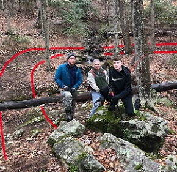
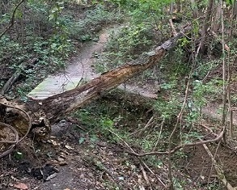
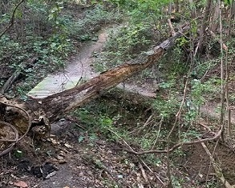

Welcome to the Trail Management System
The intent of this system is to help trail stewards and land managers manage, maintain, and build sustainable trails.

Trail Maintenance is an ongoing component of trail management. Support your trails by helping us track issues on the trails!


Select a feature then draw on map to add trail graphic
Size/Thickness:
Graphic/Text Color:
Font Size:
Note: Right-click on your Graphic to access additional options.
View river gage heights and other river details
River Gage Details

River Gage Height
View the local hydrology
Hydrology Overview
Future services for collecting trail data in the field

Note: Print in landscape for best results.
Create Trail Buffers for environmental, cultural, and habitat offsets
Distance:
Set Buffer Trail Distance Parameters
Distance: